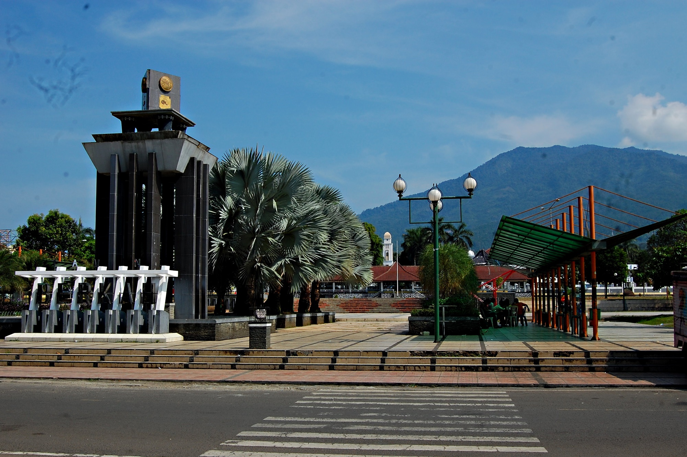

Sejarah

Pandeglang, salah satu wilayah tertua di Provinsi Banten, menyimpan rekam jejak sejarah yang kaya akan perpaduan antara tradisi lisan dan kejayaan masa lalu Kesultanan Banten. Secara etimologis, asal-usul nama wilayah ini sering dikaitkan dengan legenda "Pandai Gelang", yakni kisah cerita rakyat tentang seorang ahli pandai besi pembuat gelang sakti yang erat kaitannya dengan legenda Pangeran Cunihin dan Putri Arum. Namun, dari perspektif historis dan linguistik, banyak budayawan meyakini bahwa nama ini berasal dari kata bahasa Sunda "Paneglaan", yang berarti sebuah tempat tinggi dengan pemandangan terbuka ke segala arah, sebuah deskripsi yang sangat cocok dengan topografi Pandeglang yang berbukit dan bersandar pada keagungan Gunung Karang. Pada era prakolonial, daerah ini bukan sekadar pemukiman biasa, melainkan pusat spiritual dan lumbung pangan yang sangat vital bagi Kesultanan Banten. Nilai-nilai keislaman yang disebarkan oleh para ulama pada masa itu berakar sangat kuat, melebur dengan kearifan lokal masyarakat Sunda-Banten, dan membentuk fondasi kultural yang menjadikan wilayah ini sangat dihormati.
Memasuki era kolonialisme, lanskap politik dan administratif Pandeglang mengalami transformasi yang signifikan di bawah kendali pemerintah Hindia Belanda. Setelah Kesultanan Banten dihapuskan secara sepihak oleh Gubernur Jenderal Herman Willem Daendels pada tahun 1808, wilayah Banten mulai direstrukturisasi menjadi beberapa wilayah administratif untuk memudahkan kontrol penjajah. Kabupaten Pandeglang sendiri secara resmi disahkan pembentukannya sebagai wilayah otonom pada tanggal 1 April 1874, sebuah momentum yang hingga kini dirayakan sebagai Hari Jadi Kabupaten Pandeglang. Sepanjang masa penjajahan hingga era pergerakan kemerdekaan, wilayah ini tidak pernah benar-benar tunduk; Pandeglang menjadi basis perlawanan yang tangguh di mana para ulama, jawara, dan rakyat jelata bersatu melawan penindasan. Semangat heroik dan napas spiritualitas yang diwariskan dari pergolakan sejarah tersebut masih hidup hingga hari ini, menjadikan Pandeglang tidak hanya diakui dunia sebagai pelindung Badak Jawa di Ujung Kulon, tetapi juga masyhur dengan julukan "Kota Santri" yang terus menjaga muruah sejarah peradaban Banten.